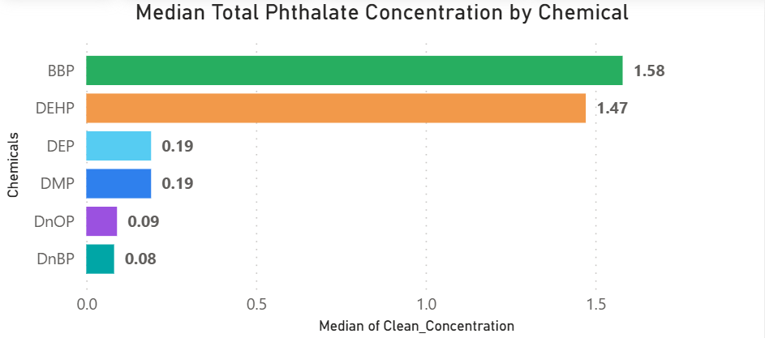
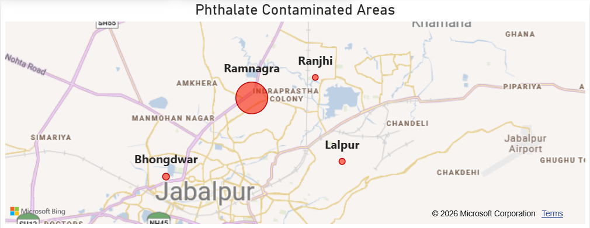
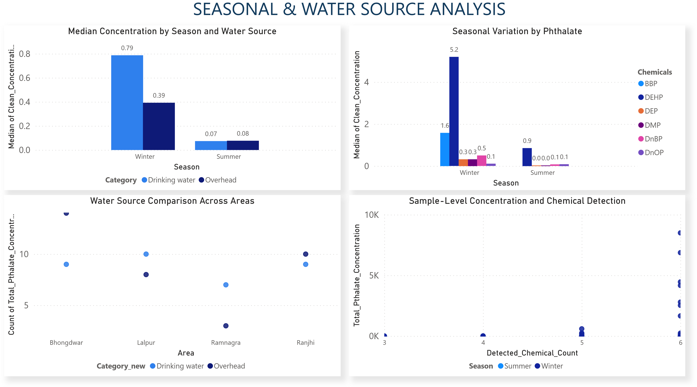
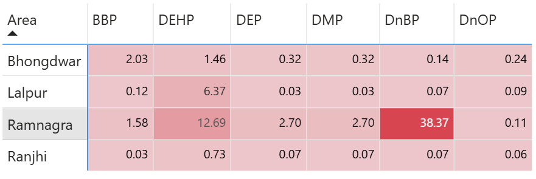

An end-to-end Data Analyst case study using Python, Pandas, SciPy and Power BI to clean, analyze and visualize spatial, seasonal and data-quality patterns across 80 water samples.
The objective was to turn a small but messy environmental dataset into a reliable analytical story that could be explored by location, season, water category and chemical.
I built the analysis as a complete analytics workflow rather than treating the dashboard as the final step.
Convert the source data, standardize categories, identify special values and validate usable observations.
Use medians, means, distributions and completeness metrics to understand concentration behavior.
Use non-parametric tests to investigate seasonal, spatial and water-category differences.
Translate findings into Power BI visuals, KPIs, data-quality views and recommendations.
The project follows a practical analyst workflow from raw data through decision-ready output.
The dashboard is designed around the questions above: overview, spatial analysis, seasonality, data quality and outlier investigation.




Data quality is part of the analysis—not a footnote.
| Chemical | Valid observations | Completeness | Median µg/L | Maximum µg/L |
|---|---|---|---|---|
| DMP | 44 / 80 | 55.0% | 0.191 | 35.426 |
| DEP | 74 / 80 | 92.5% | 0.055 | 2.860 |
| DnBP | 77 / 80 | 96.2% | 0.080 | 563.862 |
| BBP | 15 / 80 | 18.8% | 1.581 | 2.948 |
| DEHP | 71 / 80 | 88.8% | 1.461 | 8,382.900 |
| DnOP | 67 / 80 | 83.8% | 0.075 | 3.168 |
Summer median sample total: 1.093 µg/L. Winter median: 8.032 µg/L.
Mann–Whitney U = 334, p < 0.001. Winter median was approximately 7.4× Summer.
Area medians were Bhongdwar 1.937, Lalpur 1.274, Ramnagra 8.032 and Ranjhi 0.951 µg/L.
Kruskal–Wallis H = 9.61, p = 0.022, indicating overall spatial heterogeneity.
Drinking-water median: approximately 1.65 µg/L. Overhead-water median: approximately 1.86 µg/L.
Mann–Whitney U = 822, p = 0.406.
Dunn’s pairwise test should be run on the original sample-level totals after the significant Kruskal–Wallis result.
The available project HTML does not contain those pairwise results, so this page does not invent them.
Extreme observations materially affect the mean, so the portfolio analysis emphasizes medians and recommends logarithmic visualization for DEHP.
| Sample | Area | Season | Category | Total µg/L |
|---|---|---|---|---|
| B6 | Bhongdwar | Winter | Overhead | 8,505.52 |
| B19 | Bhongdwar | Winter | Overhead | 6,874.60 |
| B15 | Bhongdwar | Winter | Drinking Water | 4,460.26 |
| B5 | Bhongdwar | Winter | Drinking Water | 4,172.86 |
| RN2 | Ramnagra | Winter | Drinking Water | 2,798.00 |
| L1 | Lalpur | Winter | Overhead | 2,530.28 |
DEHP contributes approximately 92.8% of aggregate valid measured concentration. Recommendation: prioritize DEHP monitoring while retaining multi-chemical screening.
Winter median is approximately 7.4× Summer. Recommendation: incorporate seasonal monitoring and capture source/storage metadata.
The Kruskal–Wallis result is significant. Recommendation: perform Dunn’s pairwise testing and targeted resampling.
BBP has only 18.8% valid observations. Recommendation: improve analytical coverage before making strong BBP comparisons.
Special values identified and excluded from concentration calculations.
Seasonal, spatial and water-category comparisons tested statistically.
Findings translated into dashboard views and monitoring recommendations.